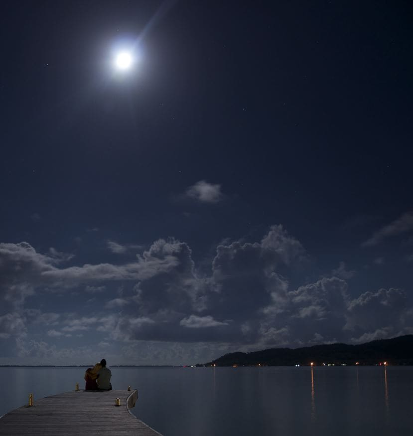

|
||||
| Home | Address | Schedules | Accommodations | Our Story |
|  |
Our StoryOn a warm summer’s day in 2017, Marcus, a software developer based in Vienna, Austria, gave a virtual reality presentation of his company’s newest maritime information systems software to prospective clients in Venice. One of these clients was the European Coastal & Marine Union (EUCC), which had sent a young representative named Sonya. Sonya, who had previously loved playing virtual reality games, was captivated by Marcus’ avant-garde performance. She approached him near the end of the conference to learn more about his company’s software, and what started as an informal business meeting soon became a moonlit walk along the beaches of Venice.Sonya and Marcus bonded over their mutual love of the ocean and of virtual reality, and when it came time for Marcus to return to Vienna, he knew that he simply couldn’t leave Sonya behind. So, Marcus left his company and used his expertise in maritime IT to found a shipping management software startup in Venice, becoming one of the standout entrepreneurs of the city. At the same time, Sonya’s influence at the EUCC continued to grow, and she was eventually tasked with planning their 2022 conference, which happened to be at the same conference hall where she had met Marcus. After the night was over, they walked together out to the very same beach they had visited years before. Sonya looked up, and seeing the full moon hanging over her, she was reminded of why she fell in love with Marcus back then. When she looked back down, she saw him on one knee, holding a diamond ring that glittered in an understated, moonlit silver. |
|
|
|
| FAQ | |
Do I need to follow COVID safety protocols?Only if you want to come in person. Sonya and Marcus are hosting the event at their favourite VR experience bar, so you can join 100% virtually! |
|
What if I can't make it to the events?We've arranged for all of the events to have a virtual counterpart, so you can experience them in the comfort of your own home or hotel room. You can even see them asynchronously! |
|
Can I bring a plus one?Yes, but please consult with us before you do, so that we can confirm the number of attendees with Vrei. |
|
Can I bring plus more than one?Absolutely not. |
|